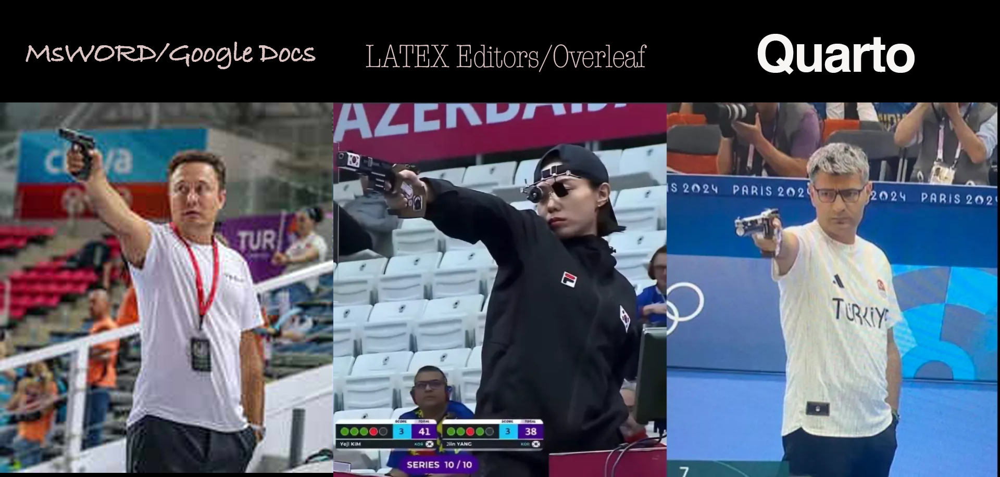
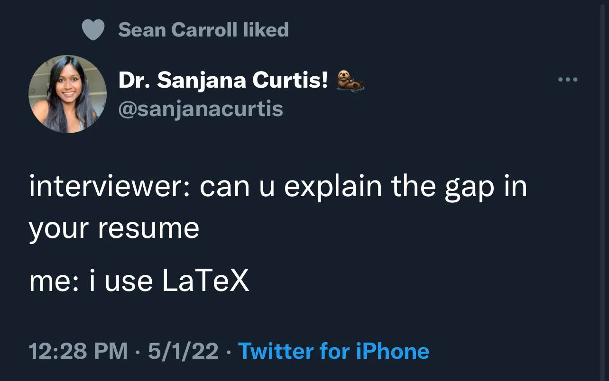
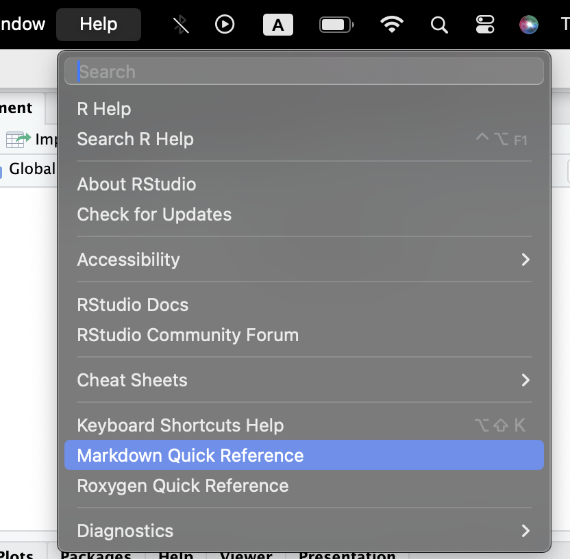
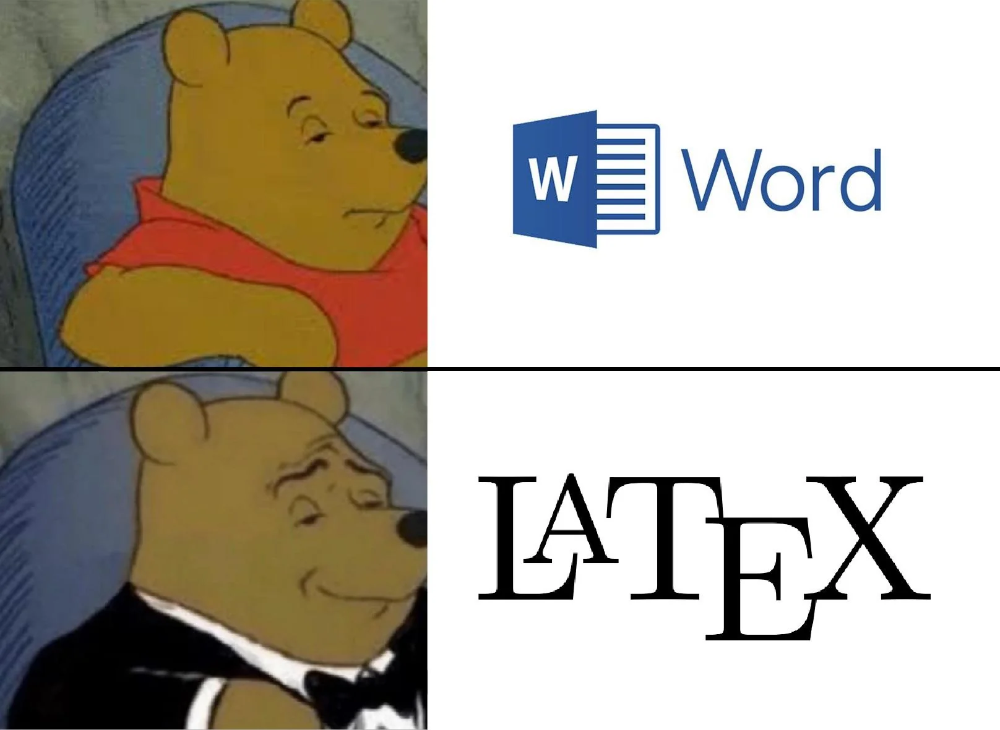

Day 4 - \(\LaTeX\) and Quarto

Software Session
WTH is \(\LaTeX\)?
Why Quarto?
Basics
Yaml
Markdown text
Code Chunks
- Practice
WTH is \(\LaTeX\)?
\(\LaTeX\) (pronounced “LAY-tek” or “LAH-Tek) is a typesetting tool for preparing high-quality professional documents. It is the preferred typesetting tool used in high-end scientific documentation task. Essentially, it allows you better control over how your document look like, has enhanced capabilities to write technical specifications (Maths, stats, proofs, etc.), and produces readily editable back-end documents.
It is not a word-processing tool. It is a simple tool without too many priors about how the document should look like.
In academic world there are definite advantages to learning and being comfortable with \(\LaTeX\). That would require regular use and best time to start doing that would be today (or at least next week!).
There are many interfaces that allow you to work with \(\LaTeX\). Overleaf is a widely used online platform and Texmaker is a popular offline application.
However, RStudio has in-built capability to double as a \(\LaTeX\) editor. Previously RMarkdown and now Quarto are those capabilities that you can harness to achieve professional and beautifully typeset documents.
Think of writing an equation like:
\[
Violence_{i,j} = \beta_0 + \beta_1EthnicFractionalization_i + \gamma_j + \epsilon_i
\] In Latex, using quarto, you have to write something like the following:
$Violence_{i,j} = \\beta_0 + \\beta_1EthnicFractionalization_i + \\gamma_j + \\epsilon_i$
For a single line of text we encapsulate code by $ sign.
For multi-line code we use $$.
Read more about \(\LaTeX\) here
The box folder has some detailed resources for helping with typesetting in \(\LaTeX\).

Quarto
Quarto is a literate statistical programming tool. Literate statistical programming, as Donald Knuth (1984) defines, is a way to write programs that focuses on explaining to human readers what we want the computers to do, rather than just instructing the computers to do so.
Quarto can include code from not just R, but also Python, Julia, Stata and many other languages/tools.
Quarto allows you to truly include the good coding guidelines that we discussed on day 1. It provides you with capability to write code using R, write text that is part of any professional communication, and include mathematical symbols and equations in a well typeset format. Essentially, it allows you to work on a manuscript with data analysis at one place.
Here is some cool stuff that you can do with quarto.
Basics
A Quarto document is saved as a .qmd file. You can edit this file in two ways: Programmatically by being in source button and visually by choosing the Visual button, both button on top left corner of the .qmd window. More details about workign with Quarto can be found on the quarto website here.
There are three building blocks in a .qmd file:
YAML
Short for Yet-Another-Markup-Languge
This is the part we see sandwiched between two --- at the strat of .qmd file. Here we define different global settings for the particular document.
Currently, we see
---
title: "Untitled"
format: html
---We can add many more options here to modify the details to appear at the start of the document. Here’s an example from quarto reference site
Or, global settings for different formats of outputs like
Code Chunks
One of the fascinating features about quarto is that you can write code to anlayse data and regular text in the same document.
You can start a new R code chunk by pressing cmd + option + I or ctrl + alt + I.
You can also do this with the Insert button icon in the editor toolbar or by manually typing the chunk delimiters ```{r} and ```.
Try to use the keyboard shortcut more often as it will save you a ton of time later.
R code chunks are surrounded by ```{r} and ```.
You can run each code chunk by clicking the Run icon (it looks like a play button at the top of the chunk), or by pressing Cmd/Ctrl + Shift + Enter.
#| eval: true # Do evaluate this chunk
#| echo: true # Do show this chunk in the final rendered document
#| output: true # Do show the output / results of this chunk in the rendered document
print("Dont run this code")RStudio executes the code and displays the results below the code.
If you don’t like seeing your plots and output in your document and would rather make use of RStudio’s Console and Plot panes, you can click on the gear icon next to “Render” and switch to “Chunk Output in Console”.
A chunk should be relatively self-contained, and focused around a single task.
Code chunk options are included in a special comment at the top of the block (lines at the top prefaced with #| are considered options). More on code chunk options here
Options available for customizing output include:
| Option | Description |
|---|---|
eval |
Evaluate the code chunk (if false, just echos the code into the output). |
echo |
Include the source code in output |
output |
Include the results of executing the code in the output (true, false, or asis to indicate that the output is raw markdown and should not have any of Quarto’s standard enclosing markdown). |
warning |
Include warnings in the output. |
error |
Include errors in the output (note that this implies that errors executing code will not halt processing of the document). |
include |
Catch all for preventing any output (code or results) from being included (e.g. include: false suppresses all output from the code block). |
You can also add these options as global options in the YAML by writing them under execute option like:
---
execute:
echo: true
inlcude: false
---The following table summarizes which types of output each option suppresses:1
| Option | Run code | Show code | Output | Plots | Messages | Warnings |
|---|---|---|---|---|---|---|
eval: false |
X | X | X | X | X | |
include: false |
X | X | X | X | X | |
echo: false |
X | |||||
results: hide |
X | |||||
fig-show: hide |
X | |||||
message: false |
X | |||||
warning: false |
X |
Inline code
We can also embed R code into a Quarto document: directly into the text, with: ```{r} <code> ```.
For example: ```{r} (2+2)```.
Markdown Text
Markdown text is like any other text just with some special considerations.
You can see the help section from R to see some of the basic formatting tips.

Practice
Let’s try all that we learnt

If you think your thought is not making sense, write it in \(\LaTeX\),
It will at least not make sense in a beautiful way.
-Buddha (500 B.C.E.)
Additonal Links
\(\LaTeX\)
Follow these instructions to install library(tinytex).